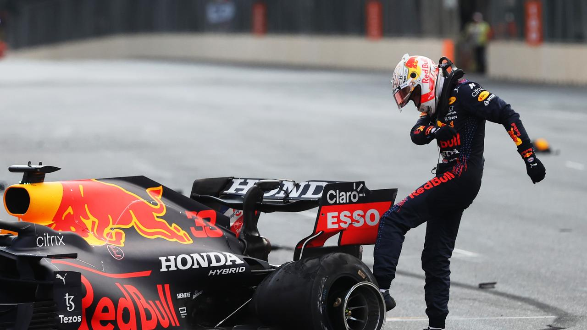

The 2021 F1 Season

The 2021 Abu Dhabi Grand Prix was one of the most controversial and dramatic races in Formula 1 history, especially because it decided the championship in a highly contentious manner.
During the race, a late-race crash by Nicholas Latifi caused a safety car to be deployed with just a few laps to go. This was crucial because Max Verstappen was trailing Lewis Hamilton in the championship decider. Typically, when a safety car is deployed, there are a few standard options for how the race can proceed:
For Example:
*Red Flag:*
- If the crash is severe and requires significant track repairs, the race may be stopped with a red flag, allowing for a full restart.
*Lapped Cars:*
- The usual procedure is for all lapped cars to be allowed to un-lap themselves during the safety car period. The race would resume with all cars in the right order.
*No Lapped Cars Un-lapping:*
- Alternatively, if the track is clear or the situation doesn’t allow for a full red flag, no lapped cars may be allowed to un-lap themselves, and the race continues as normal, with the leaders maintaining their positions.
The Discrepancy: In Abu Dhabi, the race director, Michael Masi, made an unusual decision. He allowed only the lapped cars between Hamilton and Verstappen (those directly between them) to un-lap themselves, rather than allowing all the lapped cars to do so as is typical. This effectively placed Verstappen, who was second, directly behind Hamilton for the restart, with only one lap remaining. The Usual Approach: Normally, when a safety car is deployed near the end of the race, all lapped cars are allowed to un-lap themselves so that the leading cars can have a clear, fair restart. This procedure wasn't followed in Abu Dhabi, and it was this deviation that caused much of the controversy.
Verstappen's Advantage: After the safety car came in, Verstappen was on much fresher tires than Hamilton, who had older, worn tires. This gave him a significant advantage on the final lap. Verstappen overtook Hamilton around the outside of Turn 4 and went on to win the race and the championship. The Drama: The restart and the dramatic last-lap overtaking were highly criticized because many believed that the decision to clear only some of the lapped cars created an unfair situation for Hamilton, who had been leading the race and championship up until that point.
Inconsistent Decisions: The handling of the safety car situation, and the decision to only allow some lapped cars to un-lap, was seen as inconsistent with the rules. The FIA’s race director, Michael Masi, became a focal point of criticism, as many believed his decisions were made to ensure a dramatic finish rather than adhering strictly to the regulations. Pressure for Drama: Some critics argued that Masi’s decisions may have been influenced by the desire for an exciting conclusion to the season, which was tied in terms of points between Hamilton and Verstappen.
The Aftermath: Following the controversy and widespread criticism of the handling of the race, Michael Masi was ultimately removed from his role as the FIA’s race director for the 2022 season. The FIA acknowledged that the way the race was handled was not consistent with its regulations, and Masi’s decision-making during the Abu Dhabi Grand Prix contributed to his dismissal. FIA's Response: The FIA made changes to how race directors would operate in the future, bringing in additional support and ensuring clearer and more consistent decision-making during critical moments, such as the safety car situation in Abu Dhabi.